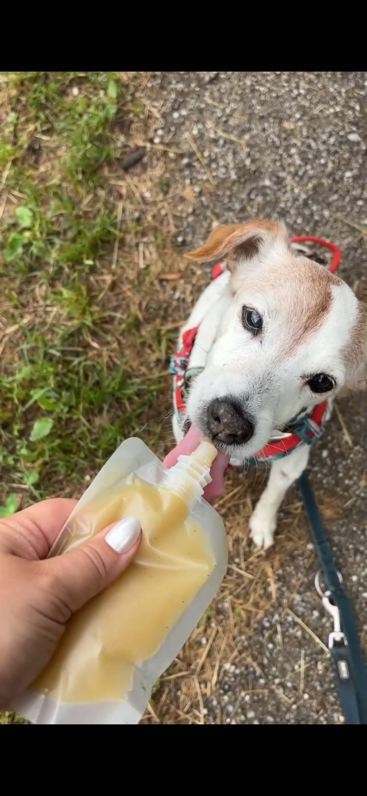
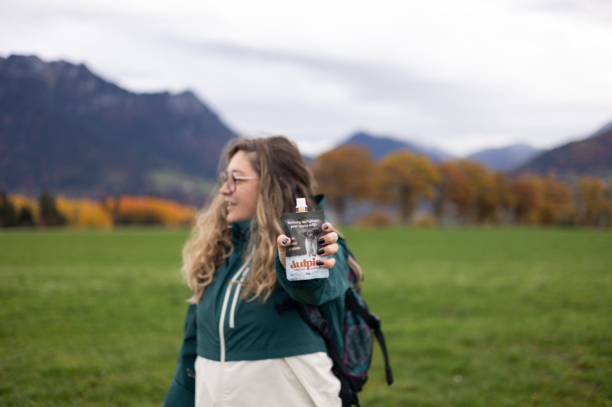

La recharge énergétique pensée pour ton chien actif
Pour la pause méritée : ce moment sur le sentier où l'on s'arrête en binôme, du dimanche tranquille à l'entraînement tout terrain.
Sur un sentier, j'avais de quoi me ravitailler. Mon chien, non : rien n'existait de pensé pour son effort. Alors j'ai créé ce qui manquait, après deux ans de tests sur le terrain avec mes trois chiennes. Aulpia ne promet pas de miracle : elle accompagne, pour que la pause soit vraiment une pause qui l'aide.
200 gourdes, pas une de plus
Avant le lancement officiel en février 2027, j'ouvre une vente privée le 30 novembre, limitée à 200 gourdes. Inscris-toi à la liste pour en profiter.
- L'accès à la boutique 1 h avant tout le monde
- Un code de 10 % de réduction
Je rejoins la liste
Tu peux te désinscrire à tout moment. Politique de confidentialité
Pourquoi une recharge pendant l'effort
Sur une sortie longue, ton chien puise dans une petite réserve de sucres, la première à baisser. Un apport au bon moment l'aide à la ménager, puis à démarrer la récupération. C'est le ravito que tu prends pour toi, enfin pensé pour lui.
Composition construite par une ASV formée en nutrition animale, et validée par une vétérinaire spécialisée en physiologie et nutrition du chien sportif.
Quatre ingrédients, rien à cacher
La base de la recette : de l'eau et des sucres naturels, pour hydrater et recharger.
Un glucose à assimilation rapide, pour remonter la réserve de glucides.
Surtout pour l'appétence : un goût que le chien apprécie, et un petit apport de glucides en plus.
Une pointe de sodium, qui accompagne l'absorption du glucose.
Testée sur le terrain, étape par étape
Deux ans de sorties avec mes chiennes, Foebee, Inna et Suerte. Puis 60 gourdes distribuées au salon de Messery (74), 32 envoyées à des abonnés testeurs pour valider l'appétence de tes poilus, et une étude auprès de 103 propriétaires. Des retours du terrain, de propriétaires de chiens comme toi.
Cette composition a été validée par une vétérinaire spécialisée en physiologie et nutrition du chien sportif.
des propriétaires ont observé des signes de fatigue chez leur chien à l'effort
souhaitent pouvoir acheter Aulpia dès sa commercialisation
estiment que le prix d'Aulpia est juste pour la valeur qu'elle apporte à leur chien


Un petit bout de chez moi dans chaque gourde
La vallée d'Aulp est l'un de mes endroits préférés pour marcher avec mes chiennes : l'altitude, l'espace, le calme des pâturages. Choisir un nom qui résonne avec Aulp, c'était garder un petit bout de chez moi dans chaque gourde. Aulpia sonne aussi un peu comme utopie : un monde serein et paisible avec son chien, comme on en trouve en montagne. Je suis Aurélia, ASV diplômée d'État, formée en nutrition animale. Ce nom est autant une intention qu'une marque.